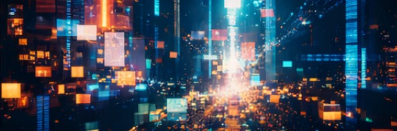

Explora la convergencia de lo digital y lo estético en esta muestra única.
Ver GaleríaEsta obra curatorial relaciona entre los sistemas digitales y las conexiones humanas. A través de formas luminosas y líneas complejas, representa cómo la tecnología crea redes invisibles.

Concepto curatorial: La pieza refleja la fragmentación en el entorno digital. Mediante composiciones visuales superpuestas, la obra cuestiona cómo las pantallas transforman nuestra realidad.
Concepto curatorial: Esta obra presenta la interacción humana y los algoritmos. La estética visual busca representar la forma en que los sistemas tecnológicos replican el comportamiento humano.